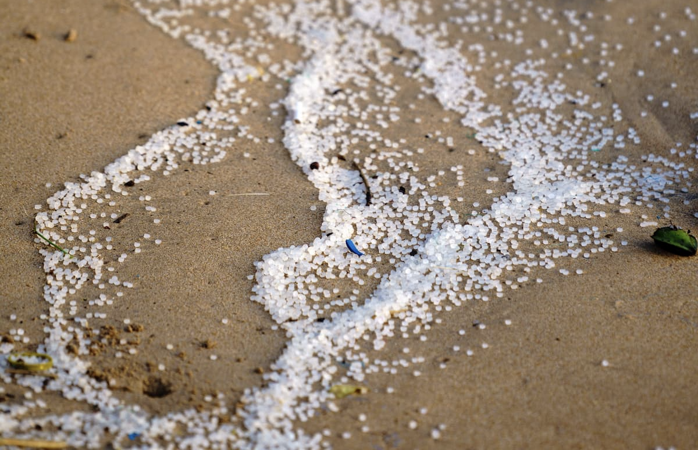
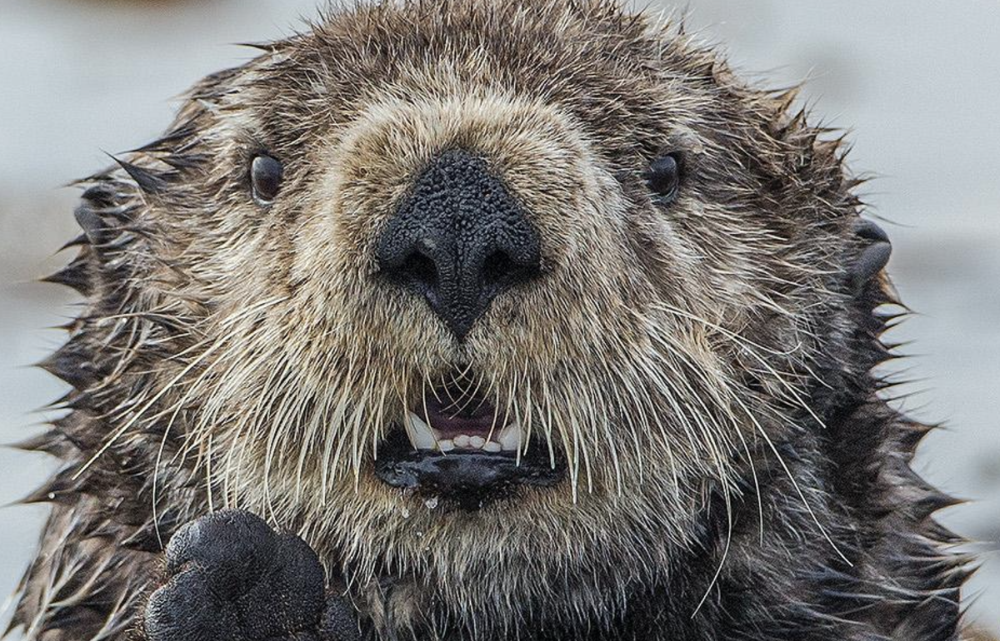
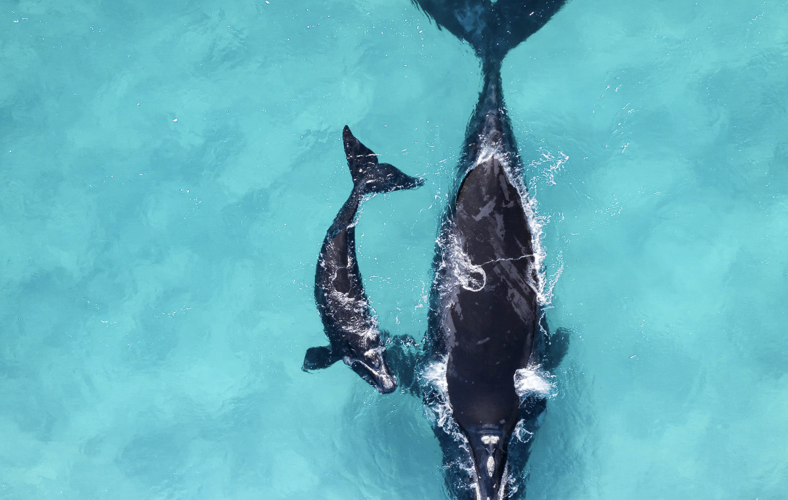

Plastic Pellets are Small but Disastrous
Like all plastics in our ocean, nurdles pose a great threat to marine life. These small round plastics usually float on the water's surface where many species feed. They're easily mistaken for fish eggs and other foods by seabirds, fish, sea turtles and many other ocean creatures.
These small plastics are having a massively detrimental effect on the health of our ocean and its inhabitants. We need advocates, like you, to help push for policies and innovations that can help prevent plastics from reaching our ocean—and our beloved sea animals.
Don't Let Congress Bulldoze Critical Ocean
Right now, members of Congress are looking to include dangerous anti-environment provisions in the fiscal year 2025 federal budget. These decision-makers—officials whom we elected to represent us—are prioritizing power over people and our planet.
But together, we can stop them. Join Ocean's Voice and tell Congress to keep funding levels strong for agencies that protect and manage our ocean and coasts and keep poison-pill riders OUT of appropriation funding packages.
Protect Whales and Protect the Ocean Now
Critically endangered whales are under threat and we need your help to protect these charismatic creatures.
As part of the ongoing budget negotiations, members of Congress have recently introduced harmful new measures aimed at dismantling critical protections for whales like the critically endangered North Atlantic right whale.
Approximately 360 North Atlantic right whales remain on the planet, meaning there's a real danger we could lose this species forever if we don't act immediately.
Steer The Shipping Industry in The Right Direction
Did you know that if ocean shipping were a country, it would be the sixth largest producer of climate pollution globally? That's right: The shipping industry belches out almost 1 billion tons of climate pollution each year.
Ninety percent of the world's goods travel via ship, but many vessels rely on some of the dirtiest fuels to power their voyages, and the noxious emissions they release cause an estimated 250,000 premature deaths and 6 million childhood asthma cases annually.
As pollution from shipping continues to worsen, it's time to steer this industry in the right direction! Tell your member of Congress to hold the shipping industry accountable for its pollution by passing the International Maritime Pollution Accountability Act.
We need to act fast. The climate crisis isn't slowing down, and we need bold action to protect our ocean from today's greatest threats.
Tell Congress to pass the International Maritime Pollution Accountability Act now.